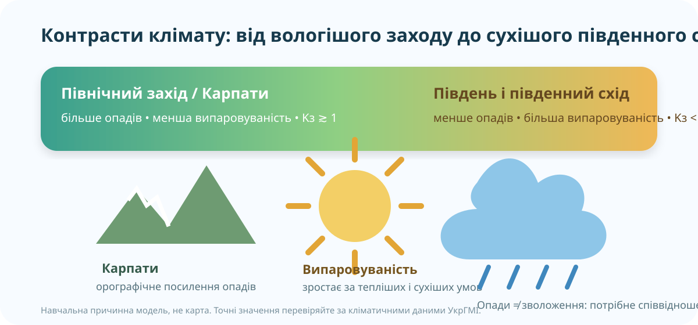

Одна країна — чому клімат настільки різний?
Запишіть прогноз: назвіть два чинники, які, на Вашу думку, створюють найбільший контраст.

Замість «десь читав»: відкриваємо кліматичний атлас
У Кліматичному атласі УкрГМІ оберіть кліматичну норму та перегляньте температуру й опади. Порівняйте захід, північ, центр, південь і схід.
Кліматичний атлас УкрГМІ ↗Climate Change Viewer УкрГМІ ↗
Яка закономірність найкраще узгоджується з картою опадів України?
Дві контрастні області: Львівська ↔ Херсонська
Заповніть таблицю за атласом. Не полюйте за «ідеальною» цифрою: важливі порядок величини, напрям відмінності та пояснення.
| Показник | Львівська область | Херсонська область | Що це доводить? |
|---|---|---|---|
| Середня t° січня | |||
| Середня t° липня | |||
| Річні опади | |||
| Рельєф / висота | |||
| Головний кліматотвірний чинник |
Доказ 1
На заході сильніший вплив атлантичних повітряних мас.
Доказ 2
Карпати створюють виразний орографічний ефект і локальні контрасти опадів.
Доказ 3
Південь тепліший, а випаровуваність більша; тому однакова кількість опадів не означала б однакове зволоження.
Коефіцієнт зволоження: опади самі по собі ще нічого не вирішують
Недостатнє зволоження.
Мінілабораторія природних зон
| Навчальний набір | P, мм | E, мм | Kз | Висновок |
|---|---|---|---|---|
| Полісся | 650 | 550 | ||
| Лісостеп | 550 | 650 | ||
| Степ | 450 | 800 | ||
| Південний степ | 350 | 900 |
Це округлений навчальний набір для відпрацювання алгоритму, а не паспорт конкретної метеостанції.
Що тепер можна сформулювати впевнено
Температура
Загалом зростає з півночі на південь; на сході сильніше проявляється континентальність, а рельєф змінює картину в горах.
Опади
У середньому їх більше на заході й північному заході, найбільше — в Карпатах; менше — на півдні та південному сході.
Зволоження
Залежить не лише від опадів, а й від випаровуваності. Саме тому Kз краще показує водний баланс території.
Коротке повторення карти кліматичних показників
Дивіться вибірково: температура → опади → зволоження. Мета — звірити власний висновок, а не переписати відео.
10 балів: відкривається після введення даних
Фінальний доказовий висновок
C — Claim: яка закономірність найкраще описує кліматичні відмінності України?
E — Evidence: наведіть щонайменше два докази: один із карти/даних, другий — із Kз.
R — Reasoning: поясніть, чому ці докази підтримують твердження.
Мініаудит клімату своєї області
1) Відкрийте електронний підручник і повторіть тему кліматичних показників. 2) У Кліматичному атласі УкрГМІ знайдіть для своєї області температуру та опади. 3) Порівняйте її з контрастною областю України. 4) Запишіть короткий CER: який чинник найкраще пояснює різницю?
Електронний підручник ↗Кліматичний атлас ↗